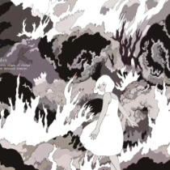

MAKING & LEARNING
Web experiments
Trying ideas out, learning as I go, and adding a little personality to the screen.
PERSONAL PORTFOLIO — 2026
A personal corner for my web experiments, favorite sounds, and visual inspiration.
君の膵臓をたべたい — a phrase I keep close

01 / A LITTLE INTRO
This is my small corner of the internet—a place to collect the things I’m exploring, the music I’m looping, and the details that make a page feel like mine.
It’s a work in progress, just like me. Stay a while, press play, and have a look around.
A few things I’m into02 / THE MIX
A rotating collection of interests, little discoveries, and things that make the days more fun.
MAKING & LEARNING
Trying ideas out, learning as I go, and adding a little personality to the screen.
ALWAYS ON REPEAT
Some songs become the soundtrack to a whole season. This one’s on repeat.
COLLECTING INSPIRATION
Color, character, and the little details that turn a page into a place.
03 / CURRENTLY ON REPEAT
Press play if you want to hear what’s been keeping me company.

hades in the dead of winter
my dead girlfriend
04 / SAY HELLO